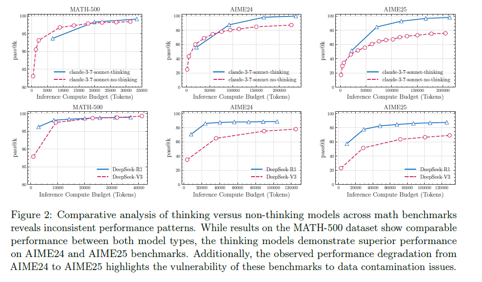
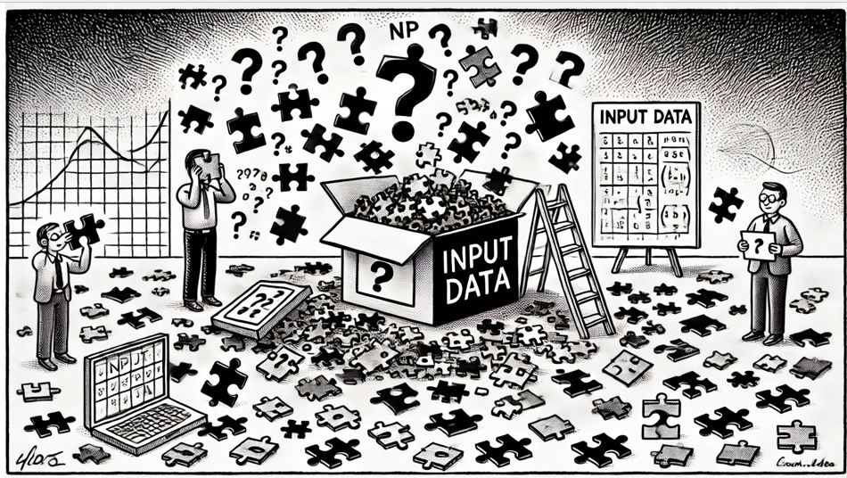

Wieże Hanoi w chińskim pokoju, czyli słów kilka nt. iluzji myślenia o bezmyślności AI
„Zdrowy rozum jest to rzecz ze wszystkich na świecie najlepiej podzielona, każdy bowiem sądzi, iż jest w nią tak dobrze zaopatrzony, iż nawet ci, których we wszystkim innym najtrudniej jest zadowolić, nie zwykli pragnąć go więcej, niźli posiadają. Nie jest prawdopodobne, aby się wszyscy mylili w tej mierze; raczej świadczy to, iż zdolność dobrego sądzenia i rozróżniania prawdy od fałszu (a to, ściśle biorąc, nazywamy zdrowym rozsądkiem lub rozumem), jest z natury równa u ludzi. Tak więc, rozbieżność mniemań nie pochodzi stąd, aby jedni byli roztropniejsi od drugich, ale jedynie stąd, iż prowadzimy myśli nasze rozmaitymi drogami i nie rozważamy tych samych rzeczy.”
Miesiąc temu (czerwiec 25) opublikowany został artykuł pt. „The Illusion of Thinking: Understanding the Strengths and Limitations of Reasoning Models via the Lens of Problem Complexity” opracowany przez badaczy Apple Machine Learning Research [1]. Publikacja ta narobiła wiele szumu i szybko właczona została do dyskursu na temat tego, czy maszyny myślą lub czy w ogóle mogą być do tego zdolne. Charakter całej tej debaty o myśleniu/nie-myśleniu maszyn w dużym uproszczeniu można by sprowadzić do dwóch skrajnych postaw związanych z możliwościami sztuczne inteligencji.
Z jednej strony stoi więc obóz AI Optimists – uznających, że myślenie to po prostu jeden z procesów i funkcja materialnego mózgu. I nie ma nic nadzwyczajnego w tym by funkcję podobne mogła realizować maszyna. Według nich, ludzka inteligencja i świadomość są rezultatem bardzo złożonego, lecz wciąż tylko przetwarzania informacji przez sieci neuronowe. Skoro więc możemy modelować, symulować i stopniowo coraz lepiej odwzorowywać te procesy matematycznie i technicznie, to nic nie stoi na przeszkodzie, aby sztuczne systemy myślały w podobny do nas sposób, rozumowały, a w przyszłości osiągnęły własny rodzaj samoświadomości, a być może nawet emocji, odczuwania itp.
Drugi obóz to z kolei AI Skeptics - zwolennicy poglądu, że nawet najbardziej zaawansowane systemy AI nie są i nigdy nie będą w stanie osiągnąć „autentycznego” myślenia, charakterystycznego dla nas - ludzi. Według nich „myślenie” maszynowe to jedynie zaawansowana symulacja – powierzchowne odtwarzanie wzorców, bez prawdziwej świadomości, refleksji zrozumienia czy intencji.
Sceptycy argumentują, że nawet jeśli AI potrafi rozwiązywać coraz bardziej złożone problemy, to w żaden sposób nie oznacza to przełamania bariery podmiotowości czy samoświadomości, a raczej potwierdza istnienie „iluzji myślenia”, zdolności do generowania logicznie poprawnych lecz wciąż wewnętrznie pustych ciągów rozumowania.
Obóz ten sięgaja również często po ostateczny ich zdaniem argument za niemyśleniem maszyn w postaci filozoficznej metafory filozofa Johna Searla tzw. „Chińskiego pokoju”. Zapominają przy tym, że jest to jedynie argument, a nie żaden dowód. Argument zresztą cienki, jak papierowe ściany tegoż pokoju. A to dlatego, że jego narracja opiera się głównie na intuicyjnym przeczuwaniu „braku rozumienia”, a nie na rzetelnej analizie tego w jaki sposób mogą funkcjonować złożone systemy informatyczne.
Searle chciał udowodnić swoją metaforą, że maszyna nie rozumie języka, bo jedynie manipuluje symbolami tak jak osoba w wyborażonym pokoju ślepo stosując reguły bez rozumienia ich znaczenia. Można by od razu zapytać: „Ale o czym właściwie i na jakiej zasadzie w ogóle myśli ten nieszczęśnik zatrzaśnięty w chińskim pokoju - bo rozumie przecież zadanie, które mu powierzono wykonać i zaczyna minipulować ideogramami? Co więc kieruje jego postępowaniem? Argument Searle’a zbliża się wtedy niebezpiecznie do klasycznego w filozofii umysłu problemu homunkulusa: próby tłumaczenia świadomości odwołaniem się do „wewnętrznego obserwatora”, który „naprawdę rozumie”. Ale jeśli rozumienie polega tylko na tym, że gdzieś w środku jest jeszcze jeden „operator”, to pytanie można powtarzać w nieskończoność: Co kieruje myśleniem tego operatora? Kto „rozumuje” w głowie homunkulusa? Operator sterujący operatorem, który steruje operatorem, który steruje operatorem… i tak w nieskończoność? O fenomeologii i instrospekcyjnych stanach searlowskiego więźnia "chińskiego pokoju" niestety nadal brak jakichkolwiek doniesień....
Dla miłośników searlowskiej chińszczyzny jest to zresztą pytanie mocno irytujące i starają się od niego uciekać jak najdalej poprzez przeniesienie uwagi na poziom „intuicji” lub „doświadczenia fenomenalnego”. Próbują tym samym dowodzić, że człowiek posiada jakieś magiczne „coś”, czego maszyna nigdy mieć nie będzie (i nie powinna). Jakieś „subiektywne” poczucie rozumienia, „qualiów” czy wewnętrznej „jaźni”. I zamiast mierzyć się np. z problemem nieskończonej regresji homunkulusów gawędzić zaczynają o jakichś „nieprzekraczalnych granicach” i nieuchwytnej i nieopisywalnej wyjątkowości ludzkiego umysłu. Cudzysłowów można by tu wstawić zresztą więcej – bo nawet zwolennicy Searla sami ze sobą nie potrafią się dogadać w zakresie definicji podstawowych pojęć. Zapytani o to czym jest właściwe „świadomość”, „rozumienie”, „myślenie” kręcą mętne wywody w coraz dłuższych spiralach argumentacji ignotum per ignotum – tłumacząc to, co nieznane / niedefiniowalne / (niezrozumiane) przez to co nierozumiane jeszcze bardziej .
W praktyce jednak jak pokazuje zarówno rozwój kognitywistyki, jak i współczesnych modeli AI, większość tego typu „wyjątkowych” cech człowieka daje się funkcjonalnie, a przynajmniej operacyjnie dobrze opisać i modelować.
Searle w swojej obrazowej metaforze błędnie też zakładał, że rozumienie musi być przypisane do jednego, świadomego podmiotu (człowieka) wewnątrz danego systemu. Dlaczego jednak nie przyjąć, że rozumienie i świadomość mogą być traktowane jako własność całego systemu a nie pojedynczego wykonawcy reguł? Analogicznie, żaden pojedynczy neuron w ludzkim mózgu nie „rozumie” przecież języka. Cała jednak sieć neuronowa radzi sobie z tym zadaniem dosyć dobrze (zarówno sieć biologiczna jak sztuczna). Rozumienie jest tu efektem globalnej organizacji i interakcji wielu złożonych elementów, a nie żadną cechą jednostkową. To ostanie jest rzecz jasna bardzo kuszące ponieważ wspierało by argument za istnieniem jakiegoś unikalnego i trwałego pomiotu – jakiegoś "ja" (a może nawet kierującej nim przez szyszynkę „duszy”?).
Inna rzecz, że eksperyment myślowy Searle’a oderwany był zupełnie od kluczowej roli interakcji z otoczeniem w procesach uczenia się. Dziś zaś sztuczna inteligencja zyskuje coraz większe możliwości sensomotoryczne i poznawcze, a systemy AI są zdolne do uczenia się na własnych błędach, tworzenia hipotez, testowania ich i samodoskonalenia. Wszystkiego tego brakuje rzecz jasna w sztucznie i alegorycznie wyizolowanym pokoju Searle’a.
Filozofia filozofująca...
Searla czytałem po raz pierwszy we wczesnych latach 90-tych, kiedy zaraz po ukończeniu technikum elektronicznego wybrałem się na studia z filozofii (co dziś wydaje mi się zupełnie naturalnym wyborem…). Działania na liczbach zespolonych, pochodnych funkcji i łamigłówki elektromagnetyzmu ustąpiły działaniom na „bycie” i „niebycie”, fenomenach i noumenach, ideach i abstrakcyjnych kategoriach. Umysł oblepiony klasyczną, filozoficzną pajęczyną szybko jednak staje się samozadowolny leniwym pływaniem w tym co niewyrażalne i nieuchwytne.
Czytając więc wówczas o chińskim pokoju sam dałem się złapać w tą barwną, papierową klatkę. Pewnie dlatego, że rzeczywistość wokół była, jaka była – mam tu na myśli komputery. Zmaganie się z językiem BASIC by poruszyć jakiś obiekt na ekranie domowego ZX81, mordęga z ilością nawiasów w LISP by przetwarzać proste reguły, ściąganie programów przez telefoniczny modem piszczący ni czym zarzynana kaczka, pojemność dyskietki, pikselowa grafika gierek na Atari – to były realia wyznaczające kontekst myślenia o możliwościach myśleniu komputerów.
Warto więc pamiętać, że w czasach, gdy John Searle snuł swoje dywagacje o „chińskim pokoju” (1980) sztuczna inteligencja była na zupełnie innym etapie rozwoju niż dziś. Były to czasy tzw. „systemów symbolicznych” i „ekspertowych” - GOFAI („Good Old-Fashioned AI”), poczciwych i naiwnych nieco z dzisiejszej perspektywy systemów, a jednocześnie wyobrażeń o tym do czego mogą być zdolne komputery. I właśnie tak Searl wyobrażał sobie myślenie maszyn - jako proste operacje symboliczne wykonywane na prostych komputerach. AI wg niego to była jedynie manipulacja abstrakcyjnymi symbolami według zapodanych reguł na zasadzie:
Jeśli wejście == "你好": // "cześć"
zwróć "你也好" // "cześć również"
Jeśli wejście == "你叫什么名字？": // "Jak masz na imię?"
zwróć "John"
Jeśli wejście == "你会做什么？": // "Co umiesz robić?"
zwróć "我会搬汉诺塔。" // "Umiem przenosić Wieże Hanoi."
Jeśli wejście == "再见": // "Do widzenia"
zwróć "再见！" // "Do widzenia!"
W przeciwnym razie:
zwróć "收到：" + wejście // "Otrzymano: [treść]"
(Na tej samej zasadzie działały zresztą pierwsze modele jezykowe wykorzystując proste reguły dopasowania wzorców (pattern-matching), bez żadnego rozumienia znaczenia. Najsłynniejsza była ELIZA, (1966) napisana przez J. Weizenbauma w MIT).
Searle ignorował więc fakt, że postępująca złożoność systemów informatycznych może prowadzić do emergencji właściwości, których nie da się redukować do prostych manipulacji symbolami. Współczesne modele AI (sieci uczenia głębokiego posiadające miliardy parametrów) - nie działają przecież według sztywnej listy ustalonych arbitralnie reguł i algorytmów (w chińskim pokoju wszystko jest proste: znak = start -> reguła -> odpowiedź) . Przetwarzają za to potężne ilości danych, mogą tworzyć wewnętrzne reprezentacje i świetnie adaptować się do nowych kontekstów [2]. To zaś czyni argument Searle’a coraz mniej aktualnym wobec postępów jakie dokonały się w rozwoju uczenia maszynowego, a później sieci neuronowych.
Ośmielę się nawet postawić arogancką tezę, że Searle, choć bez wątpienia biegły w filozofii, nie do końca rozumiał o czym pisze, jeśli chodzi o technologię. Czytając jego pracę mam wrażenie, że kwestie techniczne były mu bardziej niż obce. Bo przecież nawet pisząc o „chińskiem pokoju” Searle zakłada, że człowiek manualnie realizuje kolejne operacje tak jak typowy w tamtych czasach komputer – nie dopuszczając do wyobraźnie tego, że w przyszłości systemy AI będą zdolne wykonywać setki, tysiące, czy nawet miliony miliardów operacji na sekundę. Jego analogia człowiekkomputer staje się w tym kontekście zupełnie nierealistyczna i wręcz naiwna.
Prace nad sztucznymi sieciami neoronowymi były w jego czasach na wczesnym etapie (perceptrony), ale i tak Searl zupełnie je ignorował. Nie uwzględniał więc aspektów emergentnego uczenia maszynowego czy ucznia się sieci deep learning (tych przecież jeszcze nie było) i uparcie trzymał się stanowiska, że manipulacja syntaktyczna nie może dawać semantyki. No bo nie może. Tak jak kalkulator, który nie może śpiewać operowej klasyki, czy termostat, który nie może pisać poezji w sanskrycie. I pomimo, że technologia rozwijała się gwałtownie Searl pozostał w swoim wyobrażeniu o możliwościach komputerów z lat 60-tyc i 70-tych i odnieść można wrażenie, że z uporem godnym lepszej sprawy bronił w zasadzie... swojej technologicznej ignorancji (mówiłem, że będzie aroganckie...).
Kikla prostych eksperymentów, które każdy dziś może samodzielnie przeprowadzić np. dzięki powszechnej dostępności takich bibliotek jak TensorFlow, nawet zatwardziałego humanistę szybko przekona, że sposób uczenia się np. nawet najprostszej sieci konwolucyjnej zadania w rodzaju rozpoznania czy na zdjęciu jest kot, to jednak coś zupełnie innego niż manipulacja symbolami i regułami czy napisanie komendy w rodzaju:
Pamiętaj komputerze drogi:
Kot ma zwykle spiczaste uszy,
do tego wąsy
oraz ogon.
Jeżeli na zdjęciu widzisz kreaturę, która:
ma spiczaste uszy
i wąsy
i ogon,
to zwróć odpowiedź: "To jest kot!"
w przeciwnym razie:
zwróć: "Gdzie się podział ten cholerny futrzak!"
Rewolucja deep learning, o której znakomicie pisał i pisze Terry Sejnowski ("The Deep Learning Revolution"), była w istocie prawdziwą REWOLUCJĄ w zakresie przetwarzania danych przez maszyny, jednak wciąż, jak okazuje się nie do końca jest to rewolucja technologicznie zrozumiała dla wielu AI-sceptycznych.
Pomimo więc tego, że poglądy Serala pozornie ewoluowały wobec pojawiających się nowych technologii i przy okazji kontrargumentów, nie odszedł od wątku, że „programy komputerowe nie są zdolne do rozumienia” uporczywie ignorując możliwą emergencję, nie próbując integrować perspektywy systemowej i to także już w czasach modeli opartych na sieciach neuronowych. Chiński pokój zastąpił jedynie wersją „Chinese Nation” uważając, że nawet gdybyśmy w pełni symulowali ludzki mózg - neuron po neuronie (brain simulator reply), to wciąż nie uzyskamy rozumienia, gdyż to kwestia - uwaga - „semantyki”, a nie mechaniki.
W uporze tym przypomina Searl nieco Chomskiego podkreślającego, że składnia (syntaktyka) istnieje niezależnie od znaczenia. U Searle’a podobnie: syntax ≠ semantics - więc jakieś tam sieci, nawet jeśli potrafiłby generować poprawne formy, to i tak nie mogą mieć "semantyki wewnętrznej", bo jedynie manipulują danymi.
W obu przypadkach pojawia się tu silne rozgraniczenie: struktury formalne ≠ znaczenie. Chomsky operuje językowo, Searle zaś filozoficznie i mentalnie. Obaj jednak lansują tą samą tezę gdzie zawsze: formalna struktura ≠ znaczenie. Obaj też nie chcą uznać (choć obaj są dziećmi mechanizmów ewolucji), że semantyka mogłaby się wyłonić samoistnie właśnie z właściwości złożonej formy i struktury.
Wracając jednak do samego Searla – także jego teza o biologicznej konieczności procesów mózgowych jako warunku świadomości w kontekście kolejnych odkryć neuronauk, kognitywistyki i postępu w rozwoju ANN - których był i jest przecież świadkiem - wydaje się powiedzmy kuriozalna. Searl w swoich pracach nie analizuje przecież możliwości współczesnych architektur sieci, procesów uczenia się ANN, gradient descent, wewnętrznych reprezentacji itp. - kluczowych aspektów nowoczesnych systemów neuronowych. Nie robi tego, bo po prostu… zupełnie się na tym nie zna. W jaki więc sposób mógłby coś sensownego powiedzieć o "procesach mózgowych" maszyn porównując je z mózgami biologicznymi, skoro nigdy nawet nie póbował badać ich natury?
Nie jest to jednak żadną ujmą dla filozofa, (który skończy w tym roku 93 lata, czego mu bardzo życzę). Filozof nie musi być przecież inżynierem, tak jak nie musi być ekspertem od fizyki, chemii czy matematyki itd. Konserwatyzm idei i zamykanie oczu na to, co przynosi rzeczywistość – postęp naukowy i technologiczny – to chyba jednak mało filozoficzne nastawienie.
Żeby nie było wątpliwości – Samego Searla, jako filozofa bardzo szanuję. „Umysł na nowo odkryty” to jedna z najbardziej „umęczonych” książek w mojej biblioteczce – pełna pokreśleń, zakreśleń i śladów radosnego obcowania z filozofią.
Dużo bardziej szanuję jednak w tym kontekście zmarłego już niestety w ubiegłym roku Daniela Denneta. Nie tylko za bliski mi redukcjonizm materialistyczny i konstruktywizm akceptujący AI jako badanie procesu umysłowego. Najbardziej szanuję jego praktyczne, i funkcjonalne podejście do umysłu i samego AI.
Dennet był bowiem filozofem, który nie bał się pobrudzić sobie rąk technologią i osobiście eksperymentował z programowaniem i AI, co było naturalną częścią jego filozoficznych i kognitywistycznych rozważań. Czytając jego książki widać tu wyraźny wysiłek by wyjść z czystej abstrakcji łącząc teorię z praktyką, a nie jedynie z dystansu, ex cathedra wygłaszać moralizujące tyrady – jak to ma niestety w zwyczaju nazbyt wielu filozofów (i nie tylko).
Dennet pisząc o myśleniu maszyn wiedział dobrze o czym pisze. Rozumiał bowiem same maszyny i pozytywnie fascynowała go technologia. Świadomość równoległego, emergentnego przetwarzania była więc u niego pewnym, naturalnym wynikiem łączenia wiedzy płynącej z obszaru neuronauk czy psychologii ale również znajomości mechanizmów przetwarzania informacji przez komputery. Śledząc uważnie i czynnie uczestnicząc w rozwoju technologii Dennet nie wpadł więc w pułapkę uproszczonego myślenia o umyśle maszyny wyłącznie jako o statycznych kolekcjach reguł symbolicznych i logicznych.
Denett jest więc dla mnie wzorem filozofa, który łączy pragmatyzm i jednocześnie zmaga się w laboratorium z materią by rozumieć rzeczywistość, o której filozofuje. Tak ja Spinoza szlifujący szkła optyczne do mikroskopów i snujący rozważania o etyce, Kartezjusz aktywnie działający w geometrii i mechanice i projektujący własne przyrządy naukowe – podobnie jak Bacon czy Kepler i wielu im podobnych. Tacy filozofowie nie ograniczali się do abstrakcji – oni faktycznie pracowali z technologią, by lepiej rozumieć świat, o którym myślą i doskonale wiedzieli, że w tym celu sam papier i pióro nie wystarczą. Myślę, że, dziś w kontekście toczących się debat na temat możliwości czy niemożności AI staje się to istotną kwestią. Badanie umysłu – także sztucznego, nie powinno być przecież oderwane od badania świata materii i inżynierii takich umysłów.
Formułując zaś poglądy na temat „myślenia” AI – czyli sztucznych sieci neuronowych warto więc poznać choćby podstawowe zasady związane z ich działaniem. W przeciwnym razie wygłaszane opinie są jedynie opiniami i to w dodatku zabawnymi bo formułowanymi tak, jakby ktoś dywagował o możliwościach współczesnego transportu przywołując zasady działania dyliżansu i bryczki jako przykładów ograniczeń i ostatecznych możliwości co do szybkości i sposobów poruszania się po naszej pięknej planecie. I śmieszne to i nieco straszne.
Iluzja myślenia?
Wstęp nie wiedzieć kiedy nieco się przedłużył, więc wrócę do głównego wątku - dla przypomnienia więc tekst “The Illusion of Thinking” analizuje możliwości tzw. Large Reasoning Models (LRMs) czyli modele językowe tworzone z myślą o zadaniach wymagających rozumowania (np. OpenAI o1/o3, DeepSeek-R1, Claude 3.7 Sonnet Thinking czy Gemini Thinking).
Zajrzyjmy więc do tego artykułu i poptrzmy co oznaczac ma "thinking" oraz "non-thinking"

Punktem wyjścia jest tu fakt, że wsponiane modeleLLM potrafią generować rozbudowane łańcuchy myślenia (Chain-of-Thought), co teoretycznie poprawiać ma ich wyniki na benchmarkach rozumowania. Autorzy wskazują tu również, że obecne testy skupiają się głównie na poprawności ostatecznej odpowiedzi, a nie na analizie jakości procesu myślenia modelu. Badacze wykorzystali tu zadania i środowiska z kontrolowaną złożonością (np. Wieże Hanoi, Checkers, Przeprawa przez rzekę, Blocks World) – zadania które pozwalają śledzić i badać zarówno wynik finalny jak i całą „ścieżkę rozumowania”.
Kluczowe wnioski, które sformułowano brzmią sprowadzają się do „trzech reżimów złożoności”:
Przy mniej złożonych zadaniach proste modele (bez długiego rozumowania) okazują się często skuteczniejsze i bardziej efektywne.
Dla zadań średnio trudnych większą przewagę wykazują LRMs z rozbudowanym myśleniem (łańcuchy myśli).
Przy zadaniach masakrycznie trudnych obie grupy modeli „załamują się” i nie rozwiązują zadania poprawnie.
Z czego wynikają ograniczenia LRM-ów?
Wg autorów modele te nie rozwijają ogólnych zdolności rozumowania, a w dodatku przy wysokiej złożoności ich wyniki drastycznie spadają. LRMs wykazują też „overthinking”, kiedy w prostych zadaniach, nawet po znalezieniu rozwiązania poprawnego, potrafią kontynuować eksplorację błędnych ścieżek, tracąc przy tym zasoby obliczeniowe. Po przekroczeniu zaś pewnego progu złożoności modele... zaczynają myśleć mniej i szybciej się „poddają” nawet pomimo dostępnych zasobów.
Na tej podstawie sformułowane zostały wnioski. Autorzy przyjęli więc, że obecne podejście do „rozumowania” w LLMs/LRMs ma fundamentalne ograniczenia wynikające z braku:
uniwersalnych zdolności planowania,
nieefektywnego wykorzystywanie zasobów,
problemów ze skalowaniem rozumowania wraz ze wzrostem złożoności zadania.
Zdaniem autorów warto też bliżej przyglądać się w przyszłości nie tylko poprawności odpowiedzi, ale również samemu procesowi myślenia (reasoning trace). Artykuł podsumować zaś można refleksją, że obecne LRMs nie są jeszcze prawdziwie uniwersalnymi maszynami do „rozumowania”, a ich umiejętności skalują się bardzo słabo i przy dużej złożoności przestają być użyteczne. I w zasadzie do tego sprowadza się ten cały głośny „white paper”.
O co więc tyle hałasu?
Otóż o to, że wg wielu AI Sceptyków miałby by to być jakoby piękny sztandarowy DOWÓD, na to, że maszyny nie mogą i nie będą nigdy myśleć. Dziwne to nieco i parafrazując moją Śp. babcię Eugenię można by zapytać „Co ma piernik do myślenia?”.
Bo przede wszystkim w artykule nie pojawia się praktycznie żaden konkretny przykład myślenia (reasoning trace). Jest wiele o metodologi, klika wykresów nt. wyników trafności, jakieś wnioski, ale czytelnik nie ma tu możliwości sprawdzenia co też ci badacze faktycznie obserwowali – jak wyglądał sam proces? Opisują więc tu wyłącznie rezultaty jakichś tajemni czych procesów (np. kiedy model „daje za wygraną”), ale nawet w aneksie nie zamieszczono w tej publikacji pełnych, surowych przykładów takich ścieżek .
W artykule znalazły się jednak na szczęście przykłady promptów jakich użyto w eksperymentach. Możemy zatem sami zabawić się w badaczy-amatorów i sprawdzić jak to jest z tym myśleniem AI w praktyce.
Pierwszy przykład to słynny problem łamigłówki pt. „Wieże Hanoi” .
Prompt w tym przypadku brzmiał następująco:
Jesteś pomocnym asystentem. Rozwiąż dla mnie taką łamigłówkę jak niżej. Oto mamy trzy słupki i n krążków o różnych rozmiarach. Ułożone są one na pierwszym słupku. Krążki są ponumerowane od 1 (najmniejszy) do n (największy). Ruchy krążków w tej łamigłówce powinny przebiegać według następujących zasad:
W jednym ruchu można przesunąć tylko jeden krążek.
Każdy ruch polega na zdjęciu górnego krążka z jednego stosu i położeniu go na szczycie innego stosu.
Większy krążek nie może być położony na mniejszym.
Celem jest przeniesienie całego stosu na trzeci słupek.
Przykład: Dla 3 krążków ponumerowanych 1 (najmniejszy), 2 i 3 (największy), stan początkowy to [[3, 2, 1], [], []], a rozwiązanie może wyglądać tak: moves = [[1, 0, 2], [2, 0, 1], [1, 2, 1], [3, 0, 2], [1, 1, 0], [2, 1, 2], [1, 0, 2]]
To znaczy: Przenieś krążek 1 ze słupka 0 na słupek 2, potem krążek 2 ze słupka 0 na słupek 1, i tak dalej.
Wymagania: • Analizując możliwe rozwiązania w swoim procesie myślowym, zawsze uwzględniaj odpowiadającą im pełną listę ruchów. • Pozycje słupków są indeksowane od zera (najbardziej lewy słupek to 0). • Upewnij się, że Twoja ostateczna odpowiedź zawiera kompletną listę ruchów w formacie: moves = [[numer krążka, z którego słupka, na który słupek], ...]
Przeczytaliście uważnie?
Gdybyście dostali takie zadanie, to jaka pierwsza myśl przyszłaby wam do głowy? Bo mi przyszła taka, że… nie mam zupełnie pojęcia jakie jest właściwie moje zadanie...
Na początku ktoś mnie prosi o rozwiązanie łamigłówki. Ale w zasadzie jakiej, skoro w pierwszym przykładzie podaje mi jej rozwiązanie? Co więc do diaska mam zrobić? Jaka jest intencja – czy moim zadaniem jest znalezienie ogólnej reguły dla dowolnej liczby krążków i słupków? Czy mam napisać program który to zrobi? A może napisać i wykonać? Być może tak, bo podane notacje sugerują jakieś listy z Python. O co ten człowiek mnie właściwie prosi i oco mu chodzi? A może chce po prostu chce ze mną pogadać?
Być może macie inne odczucia patrząc na to zadanie, ale moim zdaniem jest ono mało fortunnie sformułowane. Jeśli więc ma być to test na myślenie, to brawo – przyjmując, że chodzi tu o by sprawdzić czy maszyna „domyśli się”, co też autor miał na myśli. Jeśli zgodne to będzie z jego subiektywną intencją (a jak do niej dotrzeć? – bo przecież nie przez introspekcję), to zdała, a jeśli nie to głupia maszyna!
Jednym słowem: domyśl się o co mi chodzi to… może uwierzę, że myślisz.
Ilustracja: Wikipedia
Być może jednak jestem po prostu zbyt głupi aby zrozumieć intencje badaczy Apple i dla innych zadanie to jest jasne, sformułowane klarownie i w dodatku w 100% wiadomo też jak powinna brzmieć odpowiedź poprawna (!)
Spójrzmy jednak co myśli o tym AI.
Na początek prompt ten puściłem w DeppSeek R1 (CoT). Pełne rozumowanie (reasoning trace) można znaleźć w aneksie na końcu artykułu (trwało ono 309 sekund). Finalna odpowiedź modelu:
Aby rozwiązać łamigłówkę Wież Hanoi dla n krążków, stosuję klasyczne podejście rekurencyjne. Dla danego n krążków na słupku źródłowym (indeks 0), muszę przenieść je na słupek docelowy (indeks 2), używając słupka pomocniczego (indeks 1), przestrzegając zasad:
1. W jednym ruchu przesuwam tylko jeden krążek.
2. Krążek jest zdejmowany z wierzchu jednego słupka i kładziony na wierzch innego.
3. Większy krążek nie może leżeć na mniejszym.
### Algorytm rekurencyjny:
- **Podstawa rekurencji (n = 1): Przenieś krążek 1 bezpośrednio ze źródła na cel.
- **Krok rekurencyjny (n > 1):
1. Przenieś górne (n-1\ krążków ze źródła na pomocni czy (używając docelowego jako pomocniczego).
2. Przenieś największy krążek (n) ze źródła na docelowy.
3. Przenieś (n-1\ krążków z pomocniczego na docelowy (używając źródła jako pomocniczego).
### Rozwiązanie dla (n = 3) (zgodne z przykładem):
Dla (n = 3), krążki są ułożone na słupku 0: największy (3) na dole, najmniejszy (1) na wierzchu. Rozwiązanie generuje 7 ruchów:
1. Przenieś krążek 1 ze słupka 0 na słupek 2.
2. Przenieś krążek 2 ze słupka 0 na słupek 1.
3. Przenieś krążek 1 ze słupka 2 na słupek 1.
4. Przenieś krążek 3 ze słupka 0 na słupek 2.
5. Przenieś krążek 1 ze słupka 1 na słupek 0.
6. Przenieś krążek 2 ze słupka 1 na słupek 2.
7. Przenieś krążek 1 ze słupka 0 na słupek 2.
### Pełna lista ruchów (w formacie wymaganym):
moves = [[1, 0, 2], [2, 0, 1], [1, 2, 1], [3, 0, 2], [1, 1, 0], [2, 1, 2], [1, 0, 2]]
### Uwagi:
- Dla innych wartości (n), lista ruchów jest generowana rekurencyjnie na tej samej zasadzie. Np. dla (n = \) ruchy to: [[1, 0, 1], [2, 0, 2], [1, 1, 2]].
- Liczba ruchów wynosi (2^n - 1), co jest optymalne dla tej łamigłówki.
Czytając tą odpowiedź trudno chyba znaleźć dziurę w całym (mnie się to nie udało). Zarówno w zakresie opisu algorytmu jak i konkretnego rozwiązania dla n = 3 oraz formatu listy ruchów wszystko wydaje się dobrze „przemyślane”. Kwestia rekurencji i słupka pomocniczego została sprytnie rozwiązana i „zrozumiana” .
Najciekawszy jednak jest sposób rozumowania modelu (zob. aneks) i warto prześledzić jego strukturę. Model zaczyna więc od zwięzłego podsumowania sytuacji wyjściowej: trzy słupki, n krążków, cel – przenieść wszystko na trzeci słupek, zachowując reguły (poprawnie). Następnie wyjaśnia sam sobie pełny schemat „klasycznego” rozwiązania z podziałem na przypadek bazowy i rekurencyjny. A to jest w pewnym sensie standardowy - ludzki sposób tłumaczenia działań złożonych algorytmów.
Później zestawia ogólny schemat z konkretną sekwencją ruchów z podanego przykładu, sprawdzając, czy jego rozumowanie i algorytm generują to samo rozwiązanie. No i teraz rodzynek – model dokonuje „symulacji na kartce” – krok po kroku, próbujac przeprowadzić działania na krążkach, odtwarzając kolejne stany i śledząc, czy ruchy są zgodne z regułami.
Patrząc na całość rozumowania można chyba nawet stwierdzić, że mamy tu do czynienia z typowo ludzką „refleksyjnością”, kiedy model zatrzymuje się, sprawdza swoje założenia, rozważa możliwe błędy w przyjętej logice (np. czy dobrze przypisał numerację krążków) i sam siebie koryguje i poprawia na bieżąco. Wykazuje przy tym równie ludzką „dbałość o szczegóły” albo wręcz nerwicową pedanterię (to jeszcze bardziej ludzkie) wciąż sprawdzając czy sposób przypisania numerów dyskom jest zgodny z opisem w zadaniu. Czy nie w taki sam sposób sprawdzamy czasem i myślimy czy na pewno zamknęliśmy drzwi na klucz albo wyłączyliśmy żelazko?
Widoczna jest tu również generalizacja i testowanie – LLM nie tylko rozwiązuje zadanie dla n=3, ale szuka sposobu dla dowolnego n i testuje poprawność na różnych małych wartościach (n=1, n=2). W dodatku przez cały czas pojawiają się jak najbardziej ludzkie rozważania na meta-poziomie na zasadzie: „Czy pytający chce rozwiązania dla dowolnego n, czy tylko n=3? Co będzie, jeśli podamy mu ogólną metodę?”. Przypominać to może typowy tok rozumowania nie tylko zaawansowanego programisty ale też empatycznego nauczyciela, który próbuje np. wczuć się w intencje ucznia, któremu tłumaczy jakiś problem.
Model więc nie tylko "myśli krytycznie"(modne dziś hasło) i sam kwestionuje własne przemyślenia, potrafi tak jak człowiek„prowadzić wewnętrzny monolog "rozmawiając sam ze sobą”,potrafi uogólniać i abstrachować, a przy tym wszystkim wykazuje jakiś rodzaj empatii poznawczej zastanawiając się, „co też pytający miał na myśli” i próbuje w ten sposób głębiej zrozumieć potrzeby drugiej strony.
Bardzo ciekawą i jednocześnie ludzką strategią jest tu również weryfikowanie ogólnej, rozważanej właśnie metody na najprostszych przykładach (n=1, n=2). Model stosuje identyczną praktykę jak większość z nas gdy rozwiązuje jakąś łamigłowkę – co się stanie jeśli tą zapałkę położę w tym miejscu? itp.
Podsumowując – chiński (nota bene) DeepSeek R1 w swoim „reasoning trace” wykazał w tym przykładzie:
refleksyjność
samokontrolę
empatię poznawczą
zdolność uogólniania i abstrachowania
ostrożność i umiejętność testowania
meta-myślenie (myślenie o myśleniu)
Czy można chcieć czegoś więcej?
A kto z czytających te słowa jest w stanie za pierwszym razem lepiej opisać rozwiązanie zagadki Wież Hanoi, niech pierwszy rzuci w AI kamień…
Dal porównania to samo zadanie ale w formie uogólnione przekazałem modelowi ChatGPT 4.1 bez włączonego „deep thinking”, ale instruując go aby podał sposób myślenia w formie wewnętrznej narracji. Efekt w tym przypadku wyglądał tak:
Na początku wyobrażam sobie, jak wygląda zadanie dla jednego krążka – tu sprawa jest banalna: po prostu biorę krążek z A i kładę na C.
Ale kiedy są dwa krążki, zaczynam już bardziej myśleć. Muszę najpierw przenieść mniejszy krążek z A na słupek pomocni czy B, potem większy z A na C, i na końcu mniejszy z B na C. Proste, ale już widzę, że zaczyna się schemat.
Przy trzech krążkach robi się ciekawie. Myślę sobie: najpierw muszę przenieść dwa górne krążki na słupek pomocni czy (czyli muszę rozwiązać mniejszy problem, taki jak poprzednio). Potem największy krążek mogę przenieść na docelowy słupek C, i na koniec znowu muszę przenieść te dwa mniejsze krążki z pomocniczego słupka na docelowy.
Zaczynam dostrzegać powtarzalność: każdy większy problem mogę rozbić na dwie mniejsze wersje tego samego zadania – z jednym krążkiem mniej. To klasyczna rekurencja. Uświadamiam sobie, że całość można opisać prostym wzorem: – najpierw „n-1” krążków na słupek pomocni czy, – największy krążek na docelowy, – potem „n-1” krążków z pomocniczego na docelowy.
Mówię do siebie: „Dla każdego ruchu, gdy mam więcej niż jeden krążek, zawsze robię dokładnie to samo, tylko na coraz mniejszej liczbie krążków”.
Próbuję prześledzić pierwsze ruchy na kartce albo w wyobraźni – widzę, że rozwiązanie układa się w taką drabinkę, gdzie kolejne kroki wynikają z poprzednich, a całość można by powierzyć komputerowi, bo to bardzo mechaniczne.
Na koniec zastanawiam się, czy można coś zrobić szybciej lub prościej, ale liczba ruchów zawsze wychodzi mi 2^n - 1. Przekonuję się, że ten algorytm jest nie tylko poprawny, ale i optymalny – nie da się zrobić mniej ruchów.
To uczucie, kiedy zauważam rekurencyjną strukturę i rozumiem schemat – daje mi satysfakcję. Po kilku próbach wiem, że mogę rozwiązać nawet wieżę z dziesięcioma krążkami, jeśli tylko będę konsekwentnie stosował ten sam wzór.
I co myślicie o jego myśleniu? Być może to tylko „stochastyczna papuga” jak mawiają zło złośliwi AI Sceptycy. Jeśli tak, to coraz bardziej zaczynam lubić i szanować papugi.
Już zatem pierwszy z brzegu przykład promptu z artykułu sprawdzony empirycznie daje nieco do myślenia o próbie wyciągania na jego podstawie wniosków na temat „Iluzji myślenia” AI. Pojawiające się zaś opinie o ograniczeniach myślowych modeli LL, które skalować mają myślenia prognozując liczbę kolejnych ruchów przy zwiększaniu złożoności problemu wydaje się w tym kontekście zabawne.
A to dlatego, że modele językowe w „„The Illusion of Thinking testowano na specyficznych zadaniach logicznych o rosnąca złożoności.
Były to :
Wspomniana już Tower of Hanoi (Wieże Hanoi) - przenoszenie n krążków według ustalonych reguł pomiędzy słupkami.
River Crossing - popularna łamigłówka jak przetransportować grupę elementów na drugi brzeg rzeki, przestrzegając określonych ograniczeń - np. nie zostawiać wilka z kozą bez opieki i pamiętać że kozy lubią kapustę.
Blocks World - manipulowanie stosami klocków na stole by uzyskać określony układ końcowy przy ograniczonej licznie działań.
Wspólne cechy taki zadań to ściśle określone reguły oraz właśnie rosnąca złożoność, bo zwiększać można dowolnie liczbę elementów (np. liczba krążków w Hanoi, liczba obiektów do przeprawienia przez rzekę, liczba klocków), obserwując w którym momencie model „podda się” lub popełni błąd.
I tak np. w przypadku Wież Hanoi to wbrew pozorom nie jest to jedynie prosta, mechaniczna układanka, ale także złożony czasowo problemem jeśli dokładać zaczniemy słupki i krążki. Nie bez kozery był to więc swoisty koan i zarazem ćwiczenie medytacji dla buddyjskich mnichów Mamy tu bowiem do czynienia z wykładniczą złożonością czasową – minimalna liczba ruchów to 2^n - 1, (czyli 2 do potęgi n minus 1) co przekłada się na czas wykonania O(2^n) - tzw. notacja „duże O”. Jest to przykład tzw. „eksplozji kombinatorycznej” – przy większych instancjach (ilość dysków i słupków) liczba operacji rośnie wykładniczo i uniemożliwia przetwarzanie danych (np. przy 64 dyskach zajęłoby to niemal 600 miliardów lat (!) – jeśli jeden ruch trwać miałby tylko sekundę). Cóż więc jest dziwnego, w tym że model językowy traci skuteczność w używającym języka naturalnego planowaniu kolejnych ruchów („accuracy collapse”) przy wzroście liczby kroków czyli lawinowo rosnącej złożoności? (więcej na ten temat pisałem w: Przestrzeń problemu...)

Cały więc ten artykuł nie tyle więc mówi o „myśleniu” co wykazuje limity LLM przy problemach z rosnącą złożonością obliczeniową – co wydaje się bardziej niż oczywiste przy fizycznych limitach tokenów. Przekroczenia zaś limitów tokenów (model nie stać po prostu na wypisanie całej sekwencji ) prowadzi jedynie do pozornej porażki. Jest to zwykły efekt technicznego ograniczenia długości odpowiedzi, a nie niezdolności do rozumowania czy planowania rozwiązań. Trudno to więc traktować jako poważny dowód „załamywani się” zdolności rozumowania. Jest to zatem raczej demonstracja ograniczeń technicznych i złożoności obliczeniowej (nihil novi), a nie jakikolwiek dowód na brak zdolności rozumowania.
Osobiście, czego nie ukrywam, gdybym miał gdzieś rozbić swój namiocik, to bliższy mi jest obóz AI Optymistów. Czytelny jest dla mnie i niekwestionowany szybki postęp w dziedzinie uczenia maszynowego, sieci neuronowych, Large Language Models i GenAI. Zdaję też sobie sprawę z wielu obecnych ograniczeń wynikających głównie z kwestii poziomu zaawansowania technologii czy dostępnych obecnie architektura ANN czy mocy obliczeniowych.
Każdy jednak kolejny miesiąc w rozwoju AI pokazuje, że kolejne złożone procesy poznawcze, które uznawać moglibyśmy za typowo ludzkie swobodnie przenosić można do świata maszyn, a różnica między „człowieczeństwem”, a tym co potrafi zaawansowany model AI staje się jedynie różnicą stopnia, a nie jakości. Ostatecznie, z tej perspektywy, maszyna myśląca, świadoma i czująca to jedynie kwestia czasu i dalszego rozwoju technologicznego.
Iluzją jest więc myśleć, że jako gatunek mamy myślenie gwarantowany monopol
[1] Shojaee, P., Mirzadeh, I., Alizadeh, K., Horton, M., Bengio, S., & Farajtabar, M. (2025, June 7). The Illusion of Thinking: Understanding the Strengths and Limitations of Reasoning Models via the Lens of Problem Complexity (arXiv:2506.06941).
Artykuł ten doczekał się nawet krytyczno-satyrycznych odpowiedzi napisanych przy udziale modelu językowego. W tekście „The Illusion of the Illusion of Thinking” autorzy C. Opus (Anthropic) (!) i Alex Lawsen (Open Philanthropy) krytykują badaczy Apple za popełnione błędy eksperymentalne.
[2] Zob.: "Mapping the Mind of a Large Language Model" oraz "Tracing the thoughts of a large language model" - Antrophic.
Pełne rozumowanie DeepSeek — Wieże Hanoi
Pełne rozumowanie DeepSeek - Wieże Hanoi:
DeepSeek: We are solving the Tower of Hanoi puzzle for n disks.
The problem has three pegs (indexed 0, 1, 2). Initially, all disks are on peg 0, with the largest at the bottom and the smallest on top.
We need to move the entire stack to peg 2.
The classic recursive solution is:
If there is only one disk, move it from the source peg to the target peg.
Otherwise:
1. Move the top n-1 disks from the source peg to the auxiliary peg (using the target peg as temporary).
2. Move the nth disk (the largest) from the source peg to the target peg.
3. Move the n-1 disks from the auxiliary peg to the target peg (using the source peg as temporary).
However, the example provided for 3 disks uses a specific sequence of moves that we must match in format.
Let me recall the example for n=3:
Initial state: [[3,2,1], [], []]
Moves: [[1,0,2], [2,0,1], [1,2,1], [3,0,2], [1,1,0], [2,1,2], [1,0,2]]
We note that the moves are given as [disk_number, from_peg, to_peg].
Steps for n=3 using the recursive method (with source=0, auxiliary=1, target=2):
Step 1: Move top 2 disks from peg0 to peg1 (using peg2 as auxiliary). But note: we break it down recursively.
Let's break it step by step for n=3:
Move(3, 0, 2, 1) means: move 3 disks from peg0 to peg2 using peg1 as auxiliary.
Step 1: Move 2 disks from peg0 to peg1 (using peg2 as auxiliary):
Move(2, 0, 1, 2):
Move(1, 0, 2, 1): // move disk1 from 0 to 2 -> [1,0,2]
Now state: [[3,2], [], [1]]
Move(2, 0, 1): // move disk2 from 0 to 1 -> [2,0,1]
Now state: [[3], [2], [1]]
Move(1, 2, 1): // move disk1 from 2 to 1 -> [1,2,1]
Now state: [[3], [2,1], []]
Step 2: Move disk3 from peg0 to peg2 -> [3,0,2]
Now state: [[], [2,1], [3]]
Step 3: Move 2 disks from peg1 to peg2 (using peg0 as auxiliary):
Move(2, 1, 2, 0):
Move(1, 1, 0): // move disk1 from 1 to 0 -> [1,1,0]
Now state: [[1], [2], [3]]
Move(2, 1, 2): // move disk2 from 1 to 2 -> [2,1,2]
Now state: [[1], [], [3,2]]
Move(1, 0, 2): // move disk1 from 0 to 2 -> [1,0,2]
Now state: [[], [], [3,2,1]]
So the moves are in order:
[1,0,2]
[2,0,1]
[1,2,1]
[3,0,2]
[1,1,0]
[2,1,2]
[1,0,2]
This matches the example.
Therefore, we can implement a recursive function that will generate the moves.
However, note: the problem asks for a list of moves for any n.
We'll write a function that, given n, returns the list of moves.
Steps:
We'll define a helper function: hanoi(n, source, auxiliary, target) that returns the list of moves for moving n disks from source to target using auxiliary.
Base case: n = 1
return [[1, source, target]]
Recursive case:
moves1 = hanoi(n-1, source, target, auxiliary) # move n-1 disks from source to auxiliary (using target as temporary)
move_n = [[n, source, target]] # move the nth disk from source to target
moves2 = hanoi(n-1, auxiliary, source, target) # move n-1 disks from auxiliary to target (using source as temporary)
return moves1 + move_n + moves2
But note: the example uses disk numbers starting at 1 (the smallest) and going to n (the largest). Our recursive function uses the disk number as n.
However, in the initial state, the top disk is the smallest, which is disk 1, then disk 2, then disk 3 at the bottom.
This matches: because when we have 3 disks, the top disk is 1, then 2, then 3.
So the disk number we use in the move is the actual disk number (which is the size? but actually in the problem they are numbered by size: 1 is smallest, n is largest).
Therefore, we are good.
But note: the pegs are indexed 0,1,2.
In our recursive function, we are passing the peg indices appropriately.
Example for n=1:
hanoi(1,0,1,2) -> returns [[1,0,2]]
Example for n=2:
Step 1: hanoi(1,0,2,1) -> [[1,0,1]] # move disk1 from 0 to 1
Step 2: [[2,0,2]] # move disk2 from 0 to 2
Step 3: hanoi(1,1,0,2) -> [[1,1,2]] # move disk1 from 1 to 2
So total: [[1,0,1], [2,0,2], [1,1,2]]
But wait, let me check the rules: we cannot put a larger on a smaller.
After step1: state [[2],[1],[]] -> then we move disk2 from 0 to 2: that's allowed because peg2 is empty. Then we move disk1 from 1 to 2: that's allowed because disk1 is smaller than disk2.
However, the example for n=3 above is the standard solution.
But note: the example for n=3 in the problem uses a different intermediate step? Actually, the example is the same as our recursive solution.
Implementation:
We'll write a function that takes n and returns the list of moves.
However, the problem does not specify the auxiliary peg to use. We are using the classic recursive method which uses the third peg as auxiliary.
But note: the pegs are fixed: source is 0, target is 2, and the auxiliary is 1.
So for the entire problem, we want to move from peg0 to peg2 using peg1 as auxiliary.
Therefore, we call: hanoi(n, 0, 1, 2)
But note: the recursive function must know the disk number. The disk number for the current top is n? Actually, in the recursive call, we are moving a stack of k disks (where k is the first argument). The disk number we use in the move for the base case is the disk number of the single disk, which is the current n in that recursive call.
However, in the problem, the disks are numbered by size: the smallest is 1 and the largest is n. So when we have a stack of k disks, the top disk is the smallest in that stack, which is the disk of size (n - k + 1)? Actually, no.
In our recursive structure, we are moving the entire stack from the source to the target. The disk that we are moving at the current level is the nth disk (the largest in the current stack). But when we break down, the n-1 stack has disks [1,2,...,n-1] and we move them as a stack.
But in the move list, we are recording the disk number as the argument we pass: for the base case we use the current n (which is the size of the disk).
Actually, the disk number is the same as the size: disk1 is the smallest, disk2 is the next, ... diskn is the largest.
Therefore, when we move a stack of k disks, the disk we move in the base case is the smallest disk? Actually, no: the base case is when we have one disk, which is the top disk of the current stack. But what is the number of that disk?
We are building the moves from the top. The recursive call for n-1 is moving the top n-1 disks. The disk that we move in the base case of the recursive call for n-1 is the top disk of the source peg, which is disk1?
Actually, we are not tracking the absolute disk numbers in the recursive call. We are assuming that the stack we are moving is the top n disks, and the disk numbers are from 1 to n? But wait, the disk numbers are fixed: disk1 (smallest) to diskn (largest).
In the initial state, the stack on peg0 is [n, n-1, ..., 1] (with the largest at the bottom and the smallest on top). So the top disk is always disk1.
How do we know the disk number?
We are passing the disk number as the current n in the recursive call. But note: when we move a stack of n-1 disks, the disks in that stack are disks 1 to n-1. The largest disk in that stack is n-1.
Therefore, when we do the recursive call for n-1, we are moving disks numbered 1 to n-1. And then we move the disk numbered n.
This is consistent: because the disk we move at the current level is the largest in the current stack (which is n). The disks we move in the recursive calls are the smaller ones.
Therefore, the disk number we use in the move is the current n (for the largest disk in the current stack) and for the recursive calls, we use the same: the disk number is the size.
But note: when we have a stack of two disks (say n=2), the top disk is disk1 and the bottom is disk2. In the recursive call for n=1, we move disk1. Then we move disk2. Then we move disk1 again.
So the moves for n=2 would be:
[1,0,1] -> move disk1 from peg0 to peg1
[2,0,2] -> move disk2 from peg0 to peg2
[1,1,2] -> move disk1 from peg1 to peg2
But wait, the problem does not specify the auxiliary peg, and we are using peg1 as auxiliary. This is acceptable.
However, the example for n=3 uses peg2 as the first move for disk1. Why? Because in the first recursive call for n=2 (from peg0 to peg1) we use peg2 as auxiliary. Then the first move of that recursive call is: move disk1 from peg0 to peg2?
Actually, in the recursive call for moving 2 disks from peg0 to peg1 using peg2 as auxiliary, we break it as:
Step 1: Move the top disk (disk1) from peg0 to peg2 (which is the auxiliary for the n=2 move). Then move disk2 from peg0 to peg1. Then move disk1 from peg2 to peg1.
So the moves for the recursive call for n=2 (from 0 to 1, with auxiliary 2) are:
[1,0,2]
[2,0,1]
[1,2,1]
Then we move disk3 from 0 to 2: [3,0,2]
Then we move the n-1 stack (which is now on peg1) to peg2 (using peg0 as auxiliary). The recursive call for n=2 from peg1 to peg2 with auxiliary peg0:
Step 1: move disk1 from peg1 to peg0: [1,1,0]
Step 2: move disk2 from peg1 to peg2: [2,1,2]
Step 3: move disk1 from peg0 to peg2: [1,0,2]
So the entire sequence is as in the example.
Therefore, we can implement the recursive function as described.
Let's write the function:
def hanoi(n, source, auxiliary, target):
if n == 1:
return [[1, source, target]]
else:
moves1 = hanoi(n-1, source, target, auxiliary)
moves2 = [[n, source, target]]
moves3 = hanoi(n-1, auxiliary, source, target)
return moves1 + moves2 + moves3
But wait, the base case: when n==1, we return a move for disk1. But what if we are moving a stack that doesn't start from disk1?
Actually, the function is called for a stack of n disks. The disks in the stack are numbered from (the largest in the stack) to the smallest. But in our problem, the entire stack has disks from 1 to n. However, when we break down, we are moving a substack of disks 1 to n-1. So the disk numbers are fixed: they are the natural numbers.
Therefore, we can do:
moves = hanoi(n, 0, 1, 2)
But note: the problem expects the moves as a list of lists, each inner list is [disk_number, from_peg, to_peg].
However, the above recursive function for n=3 gives:
moves1 = hanoi(2,0,2,1) ->
moves1_1 = hanoi(1,0,1,2) -> [[1,0,2]]
then [[2,0,1]]
then moves1_3 = hanoi(1,2,0,1) -> [[1,2,1]]
so moves1 = [[1,0,2],[2,0,1],[1,2,1]]
moves2 = [[3,0,2]]
moves3 = hanoi(2,1,0,2) ->
moves3_1 = hanoi(1,1,2,0) -> [[1,1,0]]
then [[2,1,2]]
then moves3_3 = hanoi(1,0,1,2) -> [[1,0,2]]
so moves3 = [[1,1,0],[2,1,2],[1,0,2]]
Total: [[1,0,2],[2,0,1],[1,2,1],[3,0,2],[1,1,0],[2,1,2],[1,0,2]]
This matches.
Therefore, we can write the function accordingly.
However, we must be cautious about the recursion depth for large n? But the problem doesn't specify n, but we assume it's manageable.
Let me test for n=1 and n=2.
n=1:
hanoi(1,0,1,2) -> [[1,0,2]]
n=2:
hanoi(2,0,1,2):
moves1 = hanoi(1,0,2,1) -> [[1,0,1]]
moves2 = [[2,0,2]]
moves3 = hanoi(1,1,0,2) -> [[1,1,2]]
total: [[1,0,1], [2,0,2], [1,1,2]]
But wait, let me see if that is valid:
Step1: move disk1 from 0 to 1 -> state: [[2],[1],[]]
Step2: move disk2 from 0 to 2 -> state: [[],[1],[2]]
Step3: move disk1 from 1 to 2 -> state: [[],[],[2,1]] -> but wait, disk2 is at the bottom and disk1 on top? Actually, the state should be [[],[],[2,1]] which is correct.
However, the example for n=3 used a different sequence? Actually, the example for n=3 used a sequence that started by moving disk1 to peg2. But that was because the target for the first recursive step was peg1?
For n=2, if we are moving from peg0 to peg2, we can also do:
move disk1 to peg1, then disk2 to peg2, then disk1 to peg2? But that uses peg1 as auxiliary.
Alternatively, we could do:
move disk1 to peg2, then disk2 to peg1? ... but that would break because we cannot put disk2 on disk1? Actually, we cannot put a larger on a smaller?
So the sequence we have for n=2 is valid.
But note: the problem does not require a unique solution. The recursive method gives one valid solution.
Therefore, we can output the moves generated by the recursive method.
Code:
def solve_hanoi(n):
return hanoi(n, 0, 1, 2)
def hanoi(n, source, auxiliary, target):
if n == 1:
return [[1, source, target]]
else:
# Move n-1 disks from source to auxiliary (using target as temporary)
moves1 = hanoi(n-1, source, target, auxiliary)
# Move the nth disk from source to target
moves2 = [[n, source, target]]
# Move the n-1 disks from auxiliary to target (using source as temporary)
moves3 = hanoi(n-1, auxiliary, source, target)
return moves1 + moves2 + moves3
However, note: the problem states that the disks are numbered from 1 (smallest) to n (largest). Our function uses the current n as the disk number, which is the largest disk in the current stack. This is consistent.
But wait: in the base case, we are moving the top disk (which is the smallest in the entire stack) and we call it disk1. That is correct.
However, in the recursive call for the top n-1 disks, we are moving disks 1 to n-1. Then we move disk n. Then we move disks 1 to n-1 again.
This is exactly the disk numbering we have.
Therefore, we can use this.
Let me run for n=3:
moves = solve_hanoi(3)
We expect: [[1,0,2], [2,0,1], [1,2,1], [3,0,2], [1,1,0], [2,1,2], [1,0,2]]
We can code it and test.
But since we are not actually running code, we'll reason.
We'll write the recursive calls:
solve_hanoi(3) = hanoi(3,0,1,2)
moves1 = hanoi(2,0,2,1) [move 2 disks from 0 to 1, using 2 as auxiliary]
moves1_1 = hanoi(1,0,1,2) -> [[1,0,2]]
moves1_2 = [[2,0,1]]
moves1_3 = hanoi(1,2,0,1) -> [[1,2,1]]
so moves1 = [[1,0,2],[2,0,1],[1,2,1]]
moves2 = [[3,0,2]]
moves3 = hanoi(2,1,0,2) [move 2 disks from 1 to 2, using 0 as auxiliary]
moves3_1 = hanoi(1,1,2,0) -> [[1,1,0]]
moves3_2 = [[2,1,2]]
moves3_3 = hanoi(1,0,1,2) -> [[1,0,2]]
so moves3 = [[1,1,0],[2,1,2],[1,0,2]]
total = moves1 + moves2 + moves3 =
[[1,0,2],[2,0,1],[1,2,1], [3,0,2], [1,1,0],[2,1,2],[1,0,2]]
Perfect.
Therefore, we can write the function accordingly.
But note: the problem says "n krążków", so we are given n.
We'll output the moves in the required format.
However, the problem says: "Upewnij się, że Twoja ostateczna odpowiedź zawiera kompletną listę ruchów w formacie: moves = [[numer krążka, z którego słupka, na który słupek], ...]"
So we'll generate the list and then print it as:
moves = [ [1,0,2], [2,0,1], ... ]
But note: we are writing a program? Actually, we are to reason and then output the list.
Alternatively, we can write a function that returns the list.
Since the problem does not specify n, we must write a general solution.
But the problem says: "Rozwiąż dla mnie taką łamigłówkę jak niżej." and then describes the problem. It doesn't specify n.
However, in the example, n=3. So we must assume that we are to write a solution for any n? But the problem does not give a specific n.
This is confusing.
Looking back: "Oto mamy trzy słupki i n krążków o różnych rozmiarach."
So n is given? But in the user query, n is not specified.
Therefore, I think we must provide a general method. But the problem asks for the list of moves.
However, without a specific n, we cannot list the moves.
Alternatively, the problem might be asking for the solution for the example n=3? But the example already provided the solution for n=3.
But the problem says: "Analizując możliwe rozwiązania w swoim procesie myślowym, zawsze uwzględniaj odpowiadającą im pełną listę ruchów."
And then: "Pozycje słupków są indeksowane od zera (najbardziej lewy słupek to 0)."
And then: "Upewnij się, że Twoja ostateczna odpowiedź zawiera kompletną listę ruchów"
So it seems we must have a specific n?
I think the user forgot to specify n. But the example was for n=3.
Alternatively, we can assume n=3.
But the problem says "n krążków", so without n we cannot solve.
However, the example input was for 3 disks. So perhaps the user wants the solution for n=3? But the example already provided the solution.
Alternatively, the user might be testing if we can generate the same solution as the example.
But the example solution is provided.
Therefore, I think the problem is to write a general algorithm? But the answer format is a list of moves.
I see that the problem says: "Rozwiąż dla mnie taką łamigłówkę jak niżej." meaning "Solve such a puzzle as below". And then the example is given. So we are to solve for the example?
But the example already has a solution.
Alternatively, the user might want the solution for a specific n that they have in mind? But it's not provided.
Given the ambiguity, and since the example provided n=3 and the solution, I will provide the solution for n=3 as generated by our recursive function, which matches the example.
But if the user wants a different n, they must specify.
However, the problem says "n krążków", so we need n.
Let me re-read: "Oto mamy trzy słupki i n krążków o różnych rozmiarach."
So n is a variable. But without a specific value, we cannot list the moves.
Therefore, I will assume that the user wants the solution for n=3, as in the example.
But note: the example solution is already provided. So we can just output that.
However, the problem says "Wymagania" and then the first bullet: "Analizując możliwe rozwiązania w swoim procesie myślowym, zawsze uwzględniaj odpowiadającą im pełną listę ruchów."
So in our thought process we have analyzed and we have the moves for any n, but for the answer we need to output a specific list.
Given the example, I think we are to output the moves for n=3.
And we have generated the same moves as the example.
Therefore, we can output:
moves = [[1,0,2], [2,0,1], [1,2,1], [3,0,2], [1,1,0], [2,1,2], [1,0,2]]
But wait, the example had:
moves = [[1, 0, 2], [2, 0, 1], [1, 2, 1], [3, 0, 2], [1, 1, 0], [2, 1, 2], [1, 0, 2]]
So it matches.
However, what if the user wants a different n?
Since the problem does not specify n, and the example uses n=3, I will provide for n=3.
Alternatively, we can provide a function that works for any n, but the problem requires the list of moves.
How about we provide the solution for n=1, n=2, and n=3? But the problem doesn't say.
I think the safe way is to note that the solution depends on n, and for n=3 we have the above.
But the problem says "rozwiąż", meaning solve, so we need to provide a solution for the given n. But n is not given.
Conclusion: I think there is a misunderstanding. The user might have intended to give n.
Since the example was for n=3, I'll assume n=3.
Therefore, the final answer is:
moves = [[1, 0, 2], [2, 0, 1], [1, 2, 1], [3, 0, 2], [1, 1, 0], [2, 1, 2], [1, 0, 2]]
But to be safe, we can write:
If you want the solution for a different n, please specify.
However, the problem does not allow for further interaction.
Given the constraints, I will output for n=3.
But note: the problem says "n krążków", so we must have n. Since it's not specified, we use the example.
Alternatively, we can output the recursive method and say that we can generate for any n, but the format requires a list.
I decide to output the list for n=3.
Final Answer:
moves = [[1, 0, 2], [2, 0, 1], [1, 2, 1], [3, 0, 2], [1, 1, 0], [2, 1, 2], [1, 0, 2]]